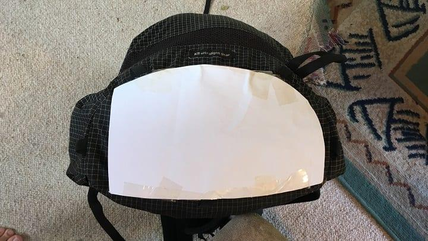
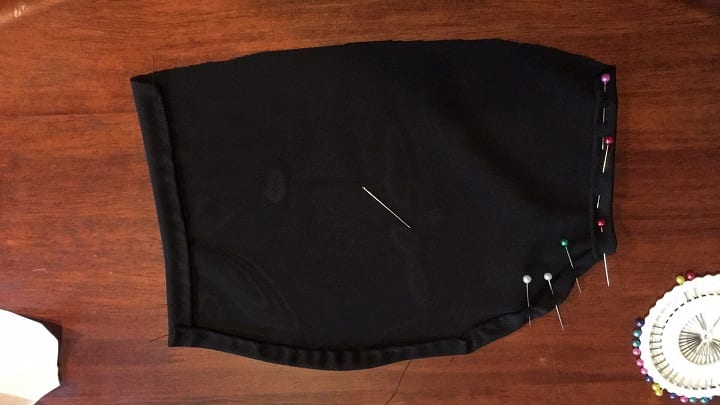
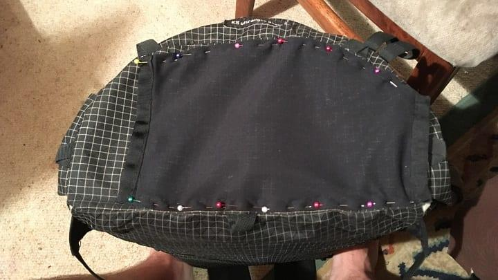

DIY Bottom Pocket
One of my only complaints about my backpack is that I wish the pockets were larger so that I could store more snacks. The guys over at Pa’lante Packs came up with a creative solution to this problem by creating a stretchy pocket on the bottom of the pack. It’s a creative spot to add more storage space that’s accessible while moving. Because they seem to support individuals adopting their ideas, I decided to try and make a bottom pocket of my own. Here are the steps I took:
Step 1: Gather Materials
I have zero experience making my own gear, and while I have a basic understanding of some of the high tech fabrics used in the outdoors industry, I had no idea what fabric to choose for this project. Fortunately, I found someone who had already made one, so I copied their fabric choices. I ordered one yard of Lycra Mesh (#1209C) and some Grosgrain Ribbon (#2036) from Quest Outfitters.
Step 2: Creating a Template
The bottom of my KS 4 is semi-circular. To figure out the right size of mesh to cut, I took a piece of paper and trimmed it until it matched the bottom of the pack. I wanted one full opening and a small opening on the other side (to maximize storage and minimize the risk of things falling out), so I trimmed off one side of the paper until it was wide enough for me to fit my hand through. I then laid this template down on a second sheet of paper and added a 2 centimeter allowance for the hem.
Step 3: Creating the Pocket
I used the second, larger template to cut out the mesh. Sharp scissors were necessary to get a good cut. Once I had the mesh, I double folded the sides in (about a centimeter) and sewed a quick running stitch to create the hem. The hem makes the edges much stronger and hides the ugly perforations. Then, I cut strips of grosgrain as long as both openings (one long, one short) and folded them in half over the mesh. I took my time with this part, using small back stitches and double looped thread.
Step 4: Attaching the Pocket
Actually sewing the pocket to my backpack was the most difficult part. Fortunately, because my pack is frameless I was able to roll it up pretty far, which made sewing easier. I wasn’t sure whether to sew the pocket flat to the bottom or give it some slack; I ended up sewing it flat which was the right move. To attach the pocket, all I did was sew double-threaded back stitches along the pinned edges you can see in the picture to the right. It helped to have some Marvel movies to watch, because all this hand sewing took way too much time.
Finished Product
I was really happy with how my little DIY project turned out. I loaded seven granola bars and a bag of dried fruit in it without problem. The mesh is plenty stretchy but holds contents tight. My biggest gripe is with the grosgrain—in retrospect perhaps I should have used something with some 2-way give like elastic. The grosgrain doesn’t stretch at all, which is nice because it stays tight to the pack and creates a natural closing mechanism. However, I can’t fit my whole hand in there when my pack is loaded up. This isn’t a huge problem because I can massage food towards the opening with both hands while still walking, but it’s not as professional as Pa’lante’s.
On Saturday, I was able to take the pack out for a hearty test drive. Now one day hike is hardly enough time to really test the pocket (I’ll get to do that in August), but some anecdotal use does give me encouragement. I found myself scrambling around in some sandstone, and at one point I really scraped the bottom of my pack against a rock. When I checked the mesh, I was surprised to find that the Ziploc bag inside the pocket had ripped small holes, but the mesh showed no signs of wear. I thought that was pretty incredible and speaks to how tough this mesh really is. I predict that my hand sewing will fail before the mesh does.
Overall, this was a very easy home project. For no sewing experience and no sewing machine, I’m quite happy with the result.
The final result loaded up with seven granola bars and a bag of dried fruit. It hardly adds any noticeable bulk when fully loaded.